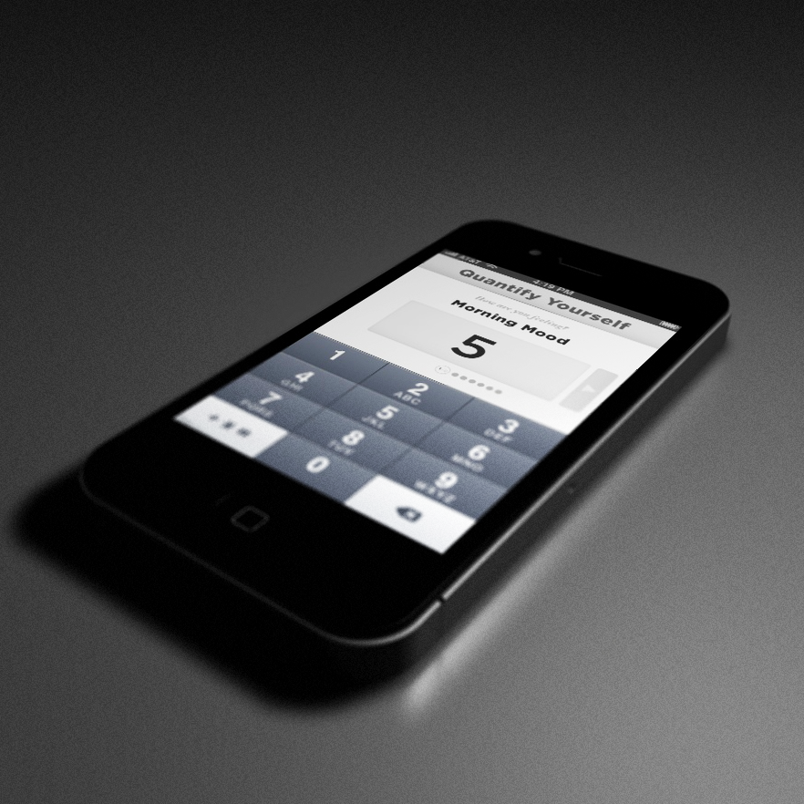
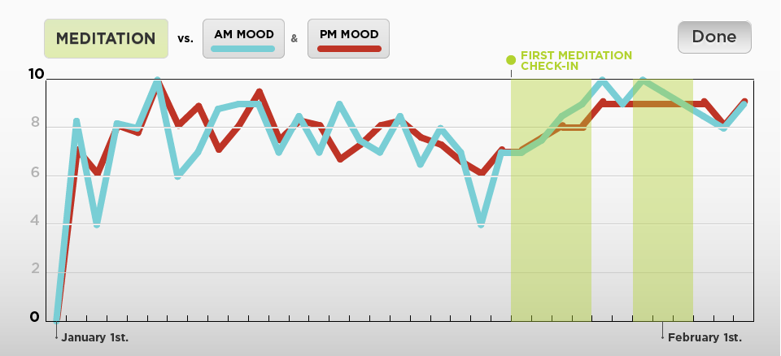

I want to help people easily learn about themselves and their habits through data.
By consistently keeping track of a set of metrics related to happiness, a user can determine how different life changes affect how happy they are.
Daily Check-ins
A user fills out two quick morning and evening check-ins, with simple 1–10 ratings of various metrics (mood, optimism, restedness). To gather how the day impacted a user’s a mood, we compare their AM mood to their PM mood. These ratings are averaged and compared day-over-day in beautiful visualizations, rewarding consistent updates. Check-ins can be made either in the mobile app, or through a desktop web interface.
Once a baseline of mood/happiness is established, a user can input habits that they wish to create or stop. These habits get added to a user’s PM check-in. “What is your evening mood? Did you meditate today? Did you get inbox zero today? Did you read a book today?”.
Using that data a user can check whether habits increase their happiness. This creates a positive reinforcement and helps a user better understand what habits make them happier.
Simple interface
The interface is simple, minimal, and rewarding. A user is expected to be able to quickly check-in in the time after they read their email in bed while waking up, or after work as they wait for the water to boil while making dinner. A user can schedule reminders for their AM and PM check-ins, and the system eventually learns to adapt these reminder times to the user.
Desktop interface
The mobile app connects to a website, where a user can see more advanced reports based on the metrics they collect about themselves. Users will own their data and be able to export it in a variety of methods, including excel and CSV. The data collected by the app will also be made available in an easily-usable API, with code examples on GitHub, so that developer users are encouraged to perform their own analysis and visualization.
Adding Context
The web interface should eventually also allow a user to import metrics from other services to compare them to the happiness metrics the app collects. A user should be able to input their data from Twitter, Fitbit, RescueTime, Pocket, OpenDNS, Reddit, Wunderlist, and any other possible data source. From there a user can compare diverse metrics to their happiness baseline and come up with insights like “My happiness increases 10% when I get a retweet on Twitter”, “When my happiness is above 7 I tweet twice as much”, “When I walk over 50,000 steps my happiness decreases 25%, but my restedness the next day increases 50%”, “When my restedness is over 6, I get an average of 8 to-do items done per day”.